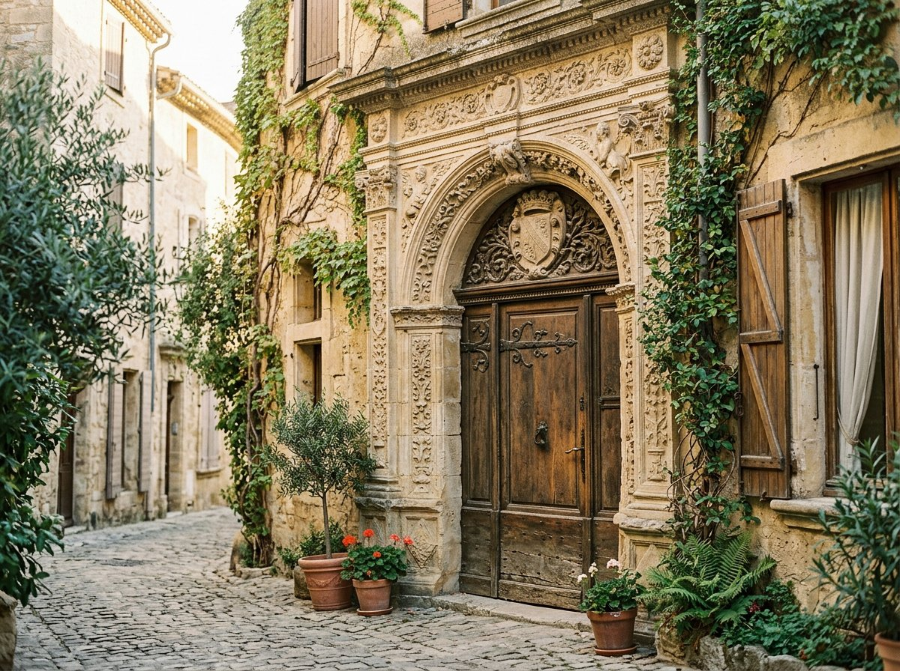
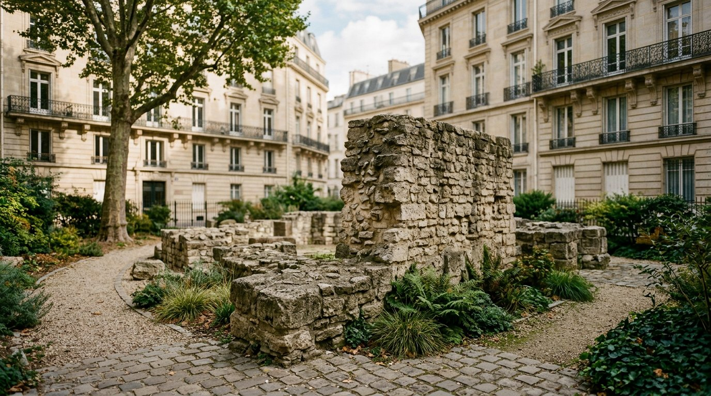

01
01
Paris · patrimoine & perspectives
Les ponts de Paris
Suivez la Seine d’une rive à l’autre et découvrez comment les ponts relient les quartiers tout en ouvrant de nouveaux points de vue sur la ville.
Imaginer cette baladeParis · quartiers & architecture
Des idées de promenades pour découvrir les quartiers, l’architecture et les histoires de Paris — et de l’Île-de-France — avec Marie-Tiyi Jalon.
Apprendre en chemin,
sans se prendre au sérieux.

Lever les yeux.
Découvrir la ville autrement.
Les idées de promenade
Des rives de la Seine aux rues de Montmartre, des façades remarquables aux traces du Paris antique : choisissez un thème, puis imaginez votre parcours avec Marie-Tiyi.
En famille, avec une classe, entre amis ou avec votre équipe : choisissez un quartier ou un monument, et construisons la balade ensemble.
Parler de votre projet
Trois inspirations à parcourir
01
Paris · patrimoine & perspectives
Suivez la Seine d’une rive à l’autre et découvrez comment les ponts relient les quartiers tout en ouvrant de nouveaux points de vue sur la ville.
Imaginer cette baladeMontmartre · quartier & récits
Prenez le temps de parcourir ce quartier, d’en observer les détails et d’écouter les histoires qui lui donnent son caractère singulier.
Imaginer cette balade
03Paris · aux origines de la ville
Remontez aux origines de la capitale et partez à la recherche des traces gallo-romaines qui se mêlent encore au Paris d’aujourd’hui.
Imaginer cette baladeImages d’illustration générées pour accompagner ces idées de promenade.
Quartiers, architecture, jardins et promenades.
01 / Paris, histoire & quartiers
02 / Arts & architecture
03 / Jardins & promenades
Les balades sur mesure sont possibles à Paris et en Île-de-France. Les tarifs de groupe sont communiqués sur demande.
La saison 2026–2027
Chaque samedi et dimanche, de 10 h 30 à 12 h, une promenade pour explorer une époque, un quartier ou une façon de voir Paris et ses alentours.
Les places restantes sont indiquées pour chaque date et actualisées régulièrement. Le lieu de rendez-vous est communiqué après l’inscription.
Chargement du programme…
Un lieu de devoir et de mémoire.
Réserver une placeLe programme 2026–2027 est terminé. Écrivez à Marie-Tiyi pour connaître les prochaines dates ou organiser une balade à la demande.
Aucune balade ne correspond à ces critères.
Les dates passées sont masquées automatiquement. Les lieux précis de rendez-vous sont communiqués au moment de l’inscription.

Le plaisir de découvrir en marchant
Du patrimoine aux paysages, le nez au vent, laissez-vous surprendre par les histoires cachées dans les lieux que l’on croyait connaître.

Votre guide
Après des études d’histoire et de géographie, une formation en sculpture et 25 ans d’enseignement, j’ai créé Balades Culturelles pour unir la marche, la contemplation et la joie de la découverte.
Mes promenades font découvrir les monuments, les paysages et les petites histoires de Paris dans une ambiance agréable, où l’on apprend sans se prendre au sérieux.
« Une ville se comprend aussi par les détails que l’on prend le temps de regarder. »
Avant de partir
Tout ce qu’il faut savoir pour préparer votre prochaine promenade, publique ou privée.
Événement familial, sortie scolaire, entre amis ou d’entreprise : le parcours peut être imaginé selon le quartier ou le monument souhaité.
Tarifs de groupe sur demandeLe lieu de rendez-vous est communiqué à l’inscription. Règlement par Wero 48 h avant la balade ou en espèces le jour même.
20 personnes maximum par visite publique.
RÉSERVATION & SORTIES SUR MESURE
Choisissez votre formule, indiquez votre groupe et laissez vos coordonnées. Pour une visite publique, le total et le montant estimé se calculent automatiquement.
Samedi et dimanche · 10 h 30–12 h
20 personnes maximum, enfants compris.
Wero 48 h avant ou espèces le jour même.
Le lieu de rendez-vous est communiqué après l’inscription.